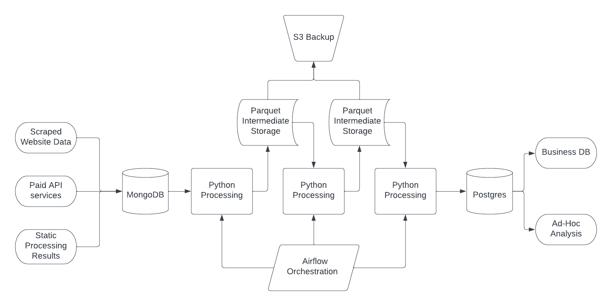
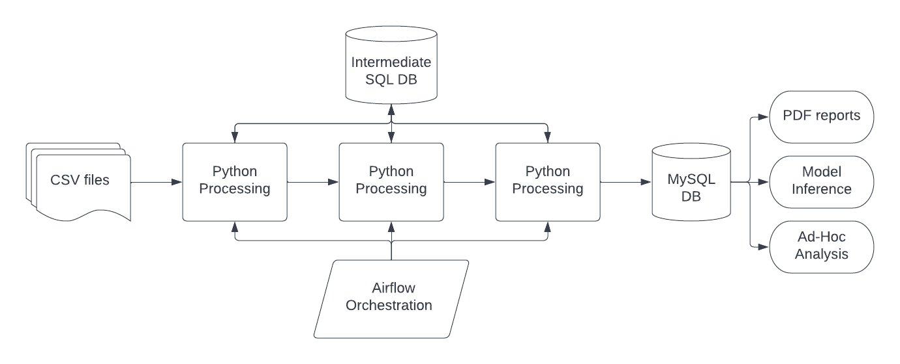

What tools have I worked with
Pipelines
Here are two examples of the pipeline structures I have worked with.
At Curation Zone, I work with pipelines which are structured as Python containers, orchestrated by Airflow.
We take data from a variety of sources and store them in a MongoDB database, as schemas vary across sources.
Following ingestion into Mongo, the data is processed in a Python-based pipeline, using parquet files as the storage method between steps.
These files are continuously backed up to s3, to allow for debugging and restarting the pipeline from an intermediate step.
The output is stored in Postgres, using an ORM (SQL Alchemy) to enforce data types and structure.

At FTI Consulting, I worked on pipelines which had a similar structure with some differences around data types for ingestion, and intermediate storage.
SQL provided greater security, and more type safety for intermediate steps.

In both cases, the pipelines were orchestrated using Apache Aiflow. The deployments were created using git based docker containers, DAGs were stored in their own repository.
There is automated testing, formatting and type checking for the python processing, using the pytest package.
Specific Technologies
| Name | Usage | Experience |
|---|---|---|
| Python | Main language for data processing | 2 YOE professionally, 4 YOE hobby |
| SQL | Used for storing and querying data for analysis, processing | 2 YOE professionally, 4 YOE hobby |
| Pandas/Numpy/SKlearn/Dask | Data processing, used in every pipeline I have built | 2 YOE professionally, 4 YOE hobby |
| MongoDB | Storing non-relational data | 1 YOE professionally |
| Apache Airflow | Used for orchestrating data pipelines, have written custom operators. | 2 YOE professionally |
| Huggingface | Library used for advanced NLP learning tasks | 2 YOE professionally |
| Tensorflow/Pytorch | Libraries used for training/inference of Deep Learning Models | 2 YOE professionally, 4 YOE hobby |
| C# | Language used for hobby projects, such as game development | 3 YOE hobby |
| Rust | Learning a lower-level language to improve my Software Engineering skills. | 6Mo hobby |